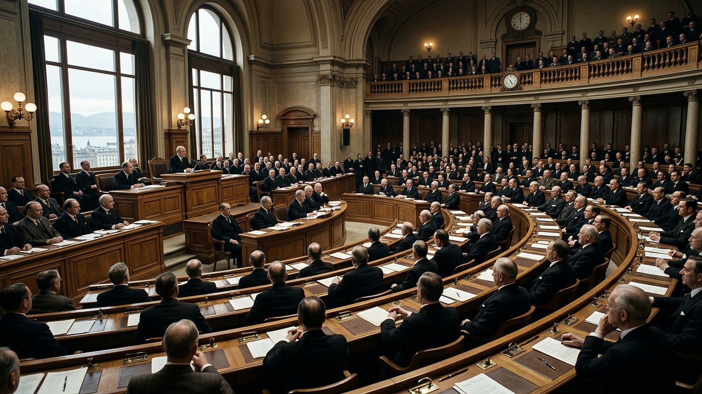
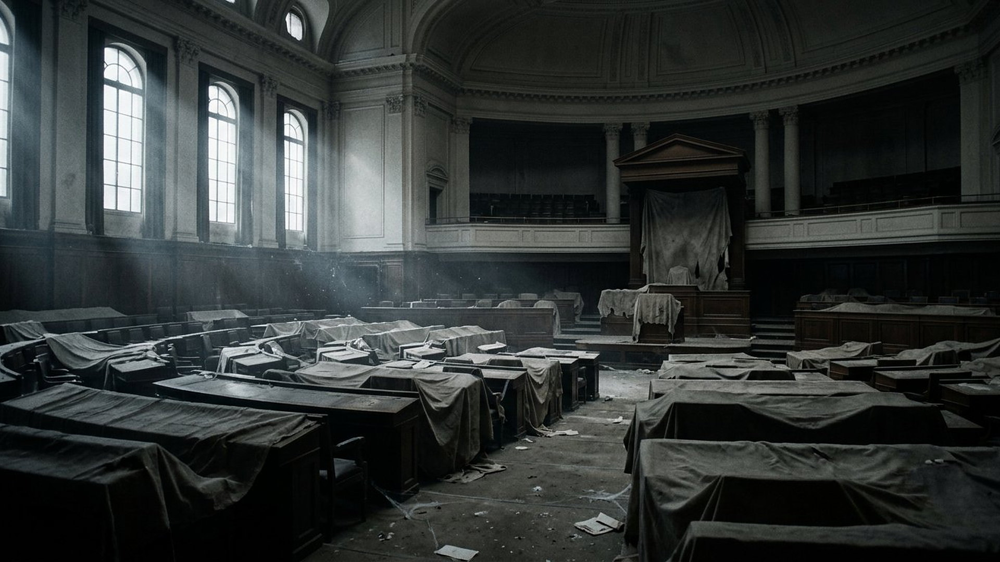

Tête 1 sur 7 — déjà tombée au temps de Jean
L'Égypte
Première puissance à tenir le peuple hébreu sous sa main : l'esclavage, puis des siècles d'influence sur le pays promis. Au temps de Jean, elle n'est plus qu'une province.

Salle 14 — EN COURS
« La bête que tu as vue était, et elle n'est plus ; elle doit monter de l'abîme (…) Les sept têtes sont sept rois : cinq sont tombés, un existe, l'autre n'est pas encore venu. » — Révélation 17:8-10 (d'après Crampon 1904)
Reconstitution numérique — Genève, la première assemblée mondiale de paix.
LECTURE PROPHÉTIQUE Dans la vision de Jean, la bête porte sept têtes que l'ange identifie à sept « rois » — sept puissances successives. La lecture retenue dans ce musée les compte du point de vue de Jean, au Iᵉʳ siècle : cinq déjà tombées, une en place, une à venir. Touchez chaque tête.
Tête 1 sur 7 — déjà tombée au temps de Jean
Première puissance à tenir le peuple hébreu sous sa main : l'esclavage, puis des siècles d'influence sur le pays promis. Au temps de Jean, elle n'est plus qu'une province.
À côté des sept têtes, Jean voit une bête écarlate distincte : une entité qui « était », puis « n'est pas », puis « monte de l'abîme » pour devenir comme un « huitième roi » (Révélation 17:8, 11). La lecture retenue ici l'identifie à l'organisation internationale par laquelle les nations tentent de gouverner ensemble la paix — née après la Première Guerre mondiale, éclipsée pendant la Seconde, reparue ensuite sous une forme nouvelle. Parcourez ses trois états.

Le Pacte de la Société des Nations entre en vigueur le 10 janvier 1920 ; sa première Assemblée en réunit 42 états à Genève en novembre 1920. Pour la première fois, une organisation permanente prétend garantir la paix du monde entier. C'est un fait d'histoire ; l'identifier à la bête « qui était » est la lecture proposée ici.
Reconstitutions numériques — Genève, la salle vide de la guerre, New York. DONNÉE HISTORIQUE pour les dates ; LECTURE PROPHÉTIQUE pour l'identification. L'histoire des Nations unies (site officiel de l'ONU)
Cette lecture ne juge ni les fonctionnaires ni les peuples : elle lit une institution humaine de recherche de la paix — louable dans son intention affichée — à la lumière d'un texte ancien qui annonce qu'aucune organisation humaine n'apportera la paix définitive, rôle réservé au Royaume des salles 07 et 15. Selon Révélation 17:16, 17, cette entité et les « dix cornes » joueront encore un rôle dans la séquence à venir (salle 15) : statut EN COURS, sans date, et sans hostilité envers qui que ce soit.
Sept têtes, sept puissances qui ont successivement dominé le peuple de Dieu, de l'Égypte à Rome, puis à la puissance anglo-américaine. Touchez chaque tête pour parcourir cette file de vingt-cinq siècles. La bête écarlate, elle, était, puis elle n'est plus, puis elle monte de l'abîme. Parcourez ses trois états : Genève en 1920, la salle vide de la Seconde Guerre mondiale, puis New York en 1945. Les dates, elles, sont publiques et vérifiables sur le site officiel des Nations unies. L'identification reste présentée comme une lecture, avec neutralité envers tous les peuples et tous les personnels de ces organisations.
La formule comporte pourtant trois temps datés et une contrainte unique : une organisation de paix mondiale et permanente, qui existe, cesse d'exister de fait sans être remplacée, puis revient. Avant 1920, aucune organisation de ce type n'a jamais existé ; la Société des Nations disparaît dans la guerre qu'elle devait empêcher, sans successeur pendant le conflit ; puis, en 1945, une organisation du même type renaît, plus vaste, et dure encore. La signature du 26 juin 1945 (San Francisco) et l'entrée en vigueur du 24 octobre 1945 sont des dates publiques, vérifiables sur le site officiel de l'ONU. L'identification reste une lecture — étiquetée comme telle — mais la séquence historique qu'elle recouvre est, elle, un fait.
Salle suivante : ce qui vient — la prochaine page de l'histoire